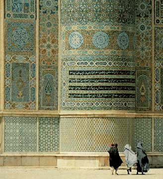

Category: Faith & Spirituality Topics: Iman (Faith And Belief), Islam, Muslims Values: Knowledge Views: 7254958
7254958
Understanding Islam and Muslims

Contents
- 1 What is Islam ?
- 2 Who are the Muslims?
- 3 What do Muslims believe?
- 4 How does someone become a Muslim?
- 5 What does Islam mean?
- 6 Why does Islam often seem strange?
- 7 Do Islam and Christianity have different origins?
- 8 What is the Ka'ba?
- 9 Who is Muhammad?
- 10 How did Muhammad become a prophet and a messenger of God?
- 11 How did the spread of Islam affect the world?
- 12 What is the Qur'an?
- 13 Are there any other sacred sources?
- 14 Examples of the Prophet's sayings
- 15 What are the Five Pillars of Islam?
- 16 Does Islam tolerate other beliefs?
- 17 What do Muslims think about Jesus?
- 18 Why is the family so important to Muslims?
- 19 What about Muslim women?
- 20 Can a Muslim have more than one wife?
- 21 Is Islamic marriage like Christian marriage?
- 22 How do Muslims treat the elderly?
- 23 How do Muslims view death?
- 24 What does Islam say about war?
- 25 What about food?
- 26 How does Islam guarantee human rights?
- 27 Islam in the United States
- 28 The Muslim World
- 29 Acknowledgments
What is Islam ?
Islam is not a new religion, but the same truth that God revealed through all His prophets to every people. For a fifth of the world's population, Islam is both a religion and a complete way of life. Muslims follow a religion of peace, mercy, and forgiveness, and the majority have nothing to do with the extremely grave events which have come to be associated with their faith.

Who are the Muslims?
One billion people from a vast range of races, nationalities and cultures across the globe - from the southern Philippines to Nigeria - are united by their common Islamic faith. About 18% live in the Arab world; the world's largest Muslim community is in Indonesia; substantial parts of Asia and most of Africa are Muslim, while significant minorities are to be found in the Soviet Union, China, North and South America, and Europe.

What do Muslims believe?
Muslims believe in One, Unique, Incomparable God; in the Angels created by Him; in the prophets through whom His revelations were brought to mankind; in the Day of Judgement and individual accountability for actions; in God's complete authority over human destiny and in life after death. Muslims believe in a chain of prophets starting with Adam and including Noah, Abraham, Ishmael, Isaac, Jacob, Joseph, Job, Moses, Aaron, David, Solomon, Elias, Jonah, John the Baptist, and Jesus, peace be upon them. But God's final message to man, a reconfirmation of the eternal message and a summing-up of all that has gone before was revealed to the Prophet Muhammad through Gabriel.

How does someone become a Muslim?
Simply by saying 'there is no god apart from Allah, and Muhammad is the Messenger of God.' By this declaration, the believer announces his or her faith in all God's messengers, and the scriptures they brought.
What does Islam mean?
The Arabic word 'Islam' simply means 'submission', and derives from a word meaning 'peace'. In a religious context it means complete submission to the will of God. 'Mohammedanism' is thus a misnomer because it suggests that Muslims worship Muhammad rather than God. 'Allah' is the Arabic name for God, which is used by Arab Muslims and Christians alike.
Why does Islam often seem strange?
Islam may seem exotic or even extreme in the modern world. Perhaps this is because religion does not dominate everyday life in the West today, whereas Muslims have religion always uppermost in their minds, and make no division between secular and sacred. They believe that the Divine Law, the Shari'a, should be taken very seriously, which is why issues related to religion are still so important.
Do Islam and Christianity have different origins?
No. Together with Judaism, they go back to the prophet and patriarch Abraham, and their three prophets are directly descended from his sons, Muhammad from the elder son Ishmael, and Moses and Jesus from the younger son Isaac. Abraham established the settlement which today is the city of Makkah, and built the Ka'ba towards which all Muslims turn when they pray.
What is the Ka'ba?
The Ka`ba is the place of worship which God commanded Abraham and Ishmael to build over four thousand years ago. The building was constructed of stone on what many believe was the original site of a sanctuary established by Adam. God commanded Abraham to summon all mankind to visit this place, and when pilgrims go there today they say 'At Thy service, O Lord', in response to Abraham's summons.

Who is Muhammad?
Muhammad, was born in Makkah in the year 570, at a time when Christianity was not yet fully established in Europe. Since his father died before his birth, and his mother shortly afterwards, he was raised by his uncle from the respected tribe of Quraysh. As he grew up, he became known for his truthfulness, generosity and sincerity, so that he was sought after for his ability to arbitrate in disputes. The historians describe him as calm and meditative.
Muhammad was of a deeply religious nature, and had long detested the decadence of his society. It became his habit to meditate from time to time in the Cave of Hira near the summit of Jabal al-Nur, the 'Mountain of Light' near Makkah.
How did Muhammad become a prophet and a messenger of God?
At the age of 40, while engaged in a meditative retreat, Muhammad received his first revelation from God through the Angel Gabriel. This revelation, which continued for twenty-three years, is known as the Quran.

As soon as he began to recite the words he heard from Gabriel, and to preach the truth which God had revealed to him, he and his small group of followers suffered bitter persecution, which grew so fierce that in the year 622 God gave them the command to emigrate. This event, the Hijra, 'migration', in which they left Makkah for the city of Madinah some 260 miles to the north, marks the beginning of the Muslim calendar.
After several years, the Prophet and his followers were able to return to Makkah, where they forgave their enemies and established Islam definitively. Before the Prophet died at the age of 63, the greater part of Arabia was Muslim, and within a century of his death, Islam had spread to Spain in the West and as far East as China.
The Prophet's Mosque, Madinah, the dome indicates the place where his house stood and where he is buried. How did the spread of Islam affect the world? Among the reasons for the rapid and peaceful spread of Islam was the simplicity of its doctrine - Islam calls for faith in only One God worthy of worship. It also repeatedly instructs man to use his powers of intelligence and observation. Juma Majsid or Malik Deenar Juma Masjid located in Kerela is the first mosque of India, built during the lifetime of Prophet Muhammad in 629 AD.

Within a few years, great civilizations and universities were flourishing, for according to the Prophet, 'seeking knowledge is an obligation for every Muslim man and woman. The synthesis of Eastern and Western ideas and of new thought with old, brought about great advances in medicine, mathematics, physics, astronomy, geography, architecture, art, literature, and history. Many crucial systems such as algebra, the Arabic numerals, and also the concept of the zero (vital to the advancement of mathematics), were transmitted to medieval Europe from Islam. Sophisticated instruments which were to make possible the European voyages of discovery were developed, including the astrolabe, the quadrant and good navigational maps.
What is the Qur'an?
The Quran is a record of the exact words revealed by God through the Angel Gabriel to the Prophet Muhammad. It was memorized by Muhammad and then dictated to his Companions, and written down by scribes, who cross-checked it during his lifetime. Not one word of its 114 chapters, Suras, has been changed over the centuries so that the Quran is in every detail the unique and miraculous text which was revealed to Muhammad fourteen centuries ago.

What is the Qur'an About?
The Quran, the last revealed Word of God, is the prime source of every Muslim's faith and practice. It deals with all the subjects which concern us as human beings: wisdom, doctrine, worship, and law, but its basic theme is the relationship between God and His creatures. At the same time, it provides guidelines for a just society, proper human conduct and an equitable economic system.
Are there any other sacred sources?
Yes, the sunna, the practice and example of the Prophet, is the second authority for Muslims. A hadith is a reliably transmitted report of what the Prophet said, did, or approved. Belief in the sunna is part of the Islamic faith.
Examples of the Prophet's sayings
The Prophet said:
'God has no mercy on one who has no mercy for others.'
'None of you truly believes until he wishes for his brother what he wishes for himself.'
'He who eats his fill while his neighbor goes without food is not a believer. '
'The truthful and trusty businessman is associated with the prophets the saints, and the martyrs.'
'Powerful is not he who knocks the other down, indeed powerful is he who controls himself in a fit of anger. '
'God does not judge according to your bodies and appearances but He scans your hearts and looks into your deeds.'
'A man walking along a path felt very thirsty. Reaching a well he descended into it, drank his fill and came up. Then he saw a dog with its tongue hanging out, trying to lick up mud to quench its thirst. The man saw that the dog was feeling the same thirst as he had felt so he went down into the well again and filled his shoe with water and gave the dog a drink. God forgave his sins for this action.' The Prophet was asked: 'Messenger of God, are we rewarded for kindness towards animals?' He said, 'There is a reward for kindness to every living thing.'
From the hadith collections of Bukhari, Muslim, Tirmidhi and Bayhaqi
What are the Five Pillars of Islam?
They are the framework of the Muslim life: faith, prayer, concern for the needy, self-purification, and the pilgrimage to Makkah for those who are able.
FAITH
There is no god worthy of worship except God and Muhammad is His messenger. This declaration of faith is called the Shahada, a simple formula that all the faithful pronounce. In Arabic, the first part is la ilaha illa Llah - 'there is no god except God'; ilaha (god) can refer to anything which we may be tempted to put in place of God - wealth, power, and the like. Then comes illa Llah: 'except God', the source of all Creation. The second part of the Shahada is Muhammadun rasulu'Llah: 'Muhammad is the messenger of God.' A message of guidance has come through a man like ourselves.
PRAYER
Salat is the name for the obligatory prayers which are performed five times a day, and are a direct link between the worshipper and God. There is no hierarchical authority in Islam, and no priests, so the prayers are led by a learned person who knows the Quran, chosen by the congregation. These five prayers contain verses from the Quran, and are said in Arabic, the language of the Revelation, but personal supplication can be offered in one's own language.
Prayers are said at dawn, noon, mid-afternoon, sunset and nightfall, and thus determine the rhythm of the entire day. Although it is preferable to worship together in a mosque, a Muslim may pray almost anywhere, such as in fields, offices, factories and universities. Visitors to the Muslim world are struck by the centrality of prayers in daily life.
A translation of the Call to Prayer is:
God is most great. God is most great.
God is most great. God is most great.
I testify that there is no god except God.
I testify that there is no god except God.
I testify that Muhammad is the messenger of God.
I testify that Muhammad is the messenger of God.
Come to prayer! Come to prayer!
Come to success (in this life and the Hereafter)!
Come to success!
God is most great. God is most great.
There is no god except God.

Courtyard of Great Mosque, Herat, Afghanistan.
THE ZAKAT
One of the most important principles of Islam is that all things belong to God, and that wealth is therefore held by human beings in trust. The word zakat means both 'purification' and 'growth'. Our possessions are purified by setting aside a proportion for those in need, and, like the pruning of plants, this cutting back balances and encourages new growth.
Each Muslim calculates his or her own zakat individually. For most purposes, this involves the payment each year of two and a half percent of one's capital.
A pious person may also give as much as he or she pleases as sadaqa, and does so preferably in secret. Although this word can be translated as 'voluntary charity' it has a wider meaning. The Prophet said 'even meeting your brother with a cheerful face is charity.'
The Prophet said: 'Charity is a necessity for every Muslim. ' He was asked: 'What if a person has nothing?' The Prophet replied: 'He should work with his own hands for his benefit and then give something out of such earnings in charity.' The Companions asked: 'What if he is not able to work?' The Prophet said: 'He should help poor and needy persons.' The Companions further asked 'What if he cannot do even that?' The Prophet said 'He should urge others to do good.' The Companions said 'What if he lacks that also?' The Prophet said 'He should check himself from doing evil. That is also charity.'
THE FAST
Every year in the month of Ramadan, all Muslims fast from first light until sundown, abstaining from food, drink, and sexual relations. Those who are sick, elderly, or on a journey, and women who are pregnant or nursing are permitted to break the fast and make up an equal number of days later in the year. If they are physically unable to do this, they must feed a needy person for every day missed. Children begin to fast (and to observe the prayer) from puberty, although many start earlier.

Although fasting is most beneficial to health, it is regarded principally as a method of self-purification. By cutting oneself off from worldly comforts, even for a short time, a fasting person gains true sympathy with those who go hungry as well as growth in one's spiritual life.
PILGRIMAGE (Hajj)
The annual pilgrimage to Makkah - the Hajj - is an obligation only for those who are physically and financially able to perform it. Nevertheless, about two million people go to Makkah each year from every corner of the globe providing a unique opportunity for those of different nations to meet one another. Although Makkah is always filled with visitors, the annual Hajj begins in the twelfth month of the Islamic year (which is lunar, not solar, so that Hajj and Ramadan fall sometimes in summer, sometimes in winter). Pilgrims wear special clothes: simple garments which strip away distinctions of class and culture, so that all stand equal before God.
 Pilgrims gather in the tent city of Mina as they start their Hajj.
Pilgrims gather in the tent city of Mina as they start their Hajj.
The rites of the Hajj, which are of Abrahamic origin, include circling the Ka'ba seven times, and going seven times between the mountains of Safa and Marwa as did Hagar during her search for water. Then the pilgrims stand together on the wide plain of Arafa and join in prayers for God's forgiveness, in what is often thought of as a preview of the Last Judgment.
In previous centuries the Hajj was an arduous undertaking. Today, however, Saudi Arabia provides millions of people with water, modern transport, and the most up-to-date health facilities.
The close of the Hajj is marked by a festival, the Eid al-Adha, which is celebrated with prayers and the exchange of gifts in Muslim communities everywhere. This, and the Eid al-Fitr, a feast-day commemorating the end of Ramadan, are the main festivals of the Muslim calendar.
Does Islam tolerate other beliefs?
The Quran says: God forbids you not, with regards to those who fight you not for [your] faith nor drive you out of your homes, from dealing kindly and justly with them; for God loveth those who are just. (Quran, 60-8)
It is one function of Islamic law to protect the privileged status of minorities, and this is why non-Muslim places of worship have flourished all over the Islamic world. History provides many examples of Muslim tolerance towards other faiths: when the caliph Omar entered Jerusalem in the year 634, Islam granted freedom of worship to all religious communities in the city.

Islamic law also permits non-Muslim minorities to set up their own courts, which implement family laws drawn up by the minorities themselves.
The Patriarch invited him to pray in the Church of the Holy Sepulchre, but he preferred to pray outside its gates, saying that if he accepted, later generations of Muslims might use his action as an excuse to turn it into a mosque. Above is the mosque built on the spot where Omar did pray.
What do Muslims think about Jesus?
Muslims respect and revere Jesus, and await his Second Coming. They consider him one of the greatest of God's messengers to mankind. A Muslim never refers to him simply as 'Jesus', but always adds the phrase 'upon him be peace. The Quran confirms his virgin birth (a chapter of the Quran is entitled 'Mary'), and Mary is considered the purest woman in all creation. The Quran describes the Annunciation as follows:
'Behold!' the Angel said, 'God has chosen you, and purified you, and chosen you above the women of all nations. O Mary, God gives you good news of a word from Him, whose name shall be the Messiah, Jesus son of Mary, honored in this world and the Hereafter, and one of those brought near to God. He shall speak to the people from his cradle and in maturity, and shall be of the righteous.'
She said: 'O my Lord! How shall I have a son when no man has touched me?' He said: 'Even so; God creates what He will. When He decrees a thing, He says to it, "Be!" and it is.' (Quran, 3:42-7)
Jesus was born miraculously through the same power which had brought Adam into being without a father:
Truly, the likeness of Jesus with God is as the likeness of Adam. He created him of dust, and then said to him, 'Be!' and he was. (Quran, 3:59)
During his prophetic mission, Jesus performed many miracles. The Quran tells us that he said:
I have come to you with a sign from your Lord: I make for you out of clay, as it were, the figure of a bird, and breathe into it and it becomes a bird by God's leave. And I heal the blind, and the lepers and I raise the dead by God's leave. (Quran, 3:49)
Neither Muhammad nor Jesus came to change the basic doctrine of the belief in One God, brought by earlier prophets, but to confirm and renew it. In the Quran Jesus is reported as saying that he came:
To attest the law which was before me. And to make lawful to you part of what was forbidden you; I have come to you with a sign from your Lord, so fear God and obey Me. (Quran, 3:5O)
The Prophet Muhammad said:
Whoever believes there is no god but God, alone without partner, that Muhammad is His messenger, that Jesus is the servant and messenger of God, His word breathed into Mary and a spirit emanating from Him, and that Paradise and Hell are true, shall be received by God into Heaven. (Hadith from Bukhari)

Why is the family so important to Muslims?
The family is the foundation of Islamic society. The peace and security offered by a stable family unit is greatly valued, and seen as essential for the spiritual growth of its members. A harmonious social order is created by the existence of extended families; children are treasured, and rarely leave home until the time they marry.
What about Muslim women?
Islam sees a woman, whether single or married, as an individual in her own right, with the right to own and dispose of her property and earnings. A marriage dowry is given by the groom to the bride for her own personal use, and she keeps her own family name rather than taking her husband's.
Both men and women are expected to dress in a way which is modest and dignified; the traditions of female dress found in some Muslim countries are often the expression of local customs.
The Messenger of God said:
'The most perfect in faith amongst believers is he who is best in manner and kindest to his wife.'
Can a Muslim have more than one wife?
The religion of Islam was revealed for all societies and all times and so accommodates widely differing social requirements. Circumstances may warrant the taking of another wife but the right is granted, according to the Quran, only on condition that the husband is scrupulously fair.
Is Islamic marriage like Christian marriage?
A Muslim marriage is not a 'sacrament', but a simple, legal agreement in which either partner is free to include conditions. Marriage customs thus vary widely from country to country. As a result, divorce is not common, although it is not forbidden as a last resort. According to Islam, no Muslim girl can be forced to marry against her will: her parents will simply suggest young men they think may be suitable.
How do Muslims treat the elderly?
In the Islamic world, there are no old people's homes. The strain of caring for one's parents in this most difficult time of their lives is considered an honor and blessing, and an opportunity for great spiritual growth. God asks that we not only pray for our parents but act with limitless compassion, remembering that when we were helpless children they preferred us to themselves. Mothers are particularly honored: the Prophet taught that 'Paradise lies at the feet of mothers'. When they reach old age, Muslim parents are treated mercifully, with the same kindness and selflessness.

In Islam, serving one's parents is a duty second only to prayer, and it is their right to expect it. It is considered despicable to express any irritation when, through no fault of their own, the old become difficult.
The Quran says: Your Lord has commanded that you worship none but Him, and be kind to parents. If either or both of them reach old age with you, do not say 'uff to them or chide them, but speak to them in terms of honor and kindness. Treat them with humility, and say, 'My Lord! Have mercy on them, for they did care for me when I was little'. (17:23-4)
How do Muslims view death?
Like Jews and Christians, Muslims believe that the present life is only a trial preparation for the next realm of existence. Basic articles of faith include: the Day of Judgment, resurrection, Heaven and Hell. When a Muslim dies, he or she is washed, usually by a family member, wrapped in a clean white cloth, and buried with a simple prayer preferably the same day. Muslims consider this one of the final services they can do for their relatives, and an opportunity to remember their own brief existence here on earth. The Prophet taught that three things can continue to help a person even after death; charity which he had given, knowledge which he had taught and prayers on their behalf by a righteous child.
What does Islam say about war?
Like Christianity, Islam permits fighting in self-defense, in defense of religion, or on the part of those who have been expelled forcibly from their homes. It lays down strict rules of combat which include prohibitions against harming civilians and against destroying crops, trees and livestock. As Muslims see it, injustice would be triumphant in the world if good men were not prepared to risk their lives in a righteous cause. The Quran says:
If they seek peace, then seek you peace. And trust in God for He is the One that heareth and knoweth all things.

War, therefore, is the last resort, and is subject to the rigorous conditions laid down by the sacred law. The term jihad literally means 'struggle', and Muslims believe that there are two kinds of jihad. The other 'jihad' is the inner struggle which everyone wages against egotistic desires, for the sake of attaining inner peace.
What about food?
Although much simpler than the dietary law followed by Jews and the early Christians, the code which Muslims observe forbids the consumption of pig meat or any kind of intoxicating drink. The Prophet taught that 'your body has rights over you', and the consumption of wholesome food and the leading of a healthy lifestyle are seen as religious obligations.
The Prophet said: 'Ask God for certainty [of faith] and well-being; for after certainty, no one is given any gift better than health!'
How does Islam guarantee human rights?
Freedom of conscience is laid down by the Quran itself: 'There is no compulsion in religion'.
The life and property of all citizens in an Islamic state are considered sacred whether a person is Muslim or not.
Racism is incomprehensible to Muslims, for the Quran speaks of human equality in the following terms:
O mankind! We created you from a single soul, male and female, and made you into nations and tribes, so that you may come to know one another. Truly, the most honored of you in God's sight is the greatest of you in piety. God is all-knowing, all aware
Islam in the United States
It is almost impossible to generalize about American Muslims: converts, immigrants, factory workers, doctors; all are making their own contribution to America's future. This complex community is unified by a common faith, underpinned by a countrywide network of a thousand mosques.
Muslims were early arrivals in North America. By the eighteenth century there were many thousands of them, working as slaves on plantations. These early communities, cut off from their heritage and families, inevitably lost their Islamic identity as time went by. Today many Afro-American Muslims play an important role in the Islamic community.
 Diyanet Center of America (DCA) is based in Lanham, Maryland, serving the needs of the Muslim community in the Washington Metropolitan Area. The center benefits from its proximity to the nation's capital, various federal and state institutions, and schools. The complex consists of five main buildings, an underground parking garage, and a geothermal well field on a 15-acre site. The five buildings are a mosque constructed using 16th century classical Ottoman architecture (photo: iStock by Getty Images).
Diyanet Center of America (DCA) is based in Lanham, Maryland, serving the needs of the Muslim community in the Washington Metropolitan Area. The center benefits from its proximity to the nation's capital, various federal and state institutions, and schools. The complex consists of five main buildings, an underground parking garage, and a geothermal well field on a 15-acre site. The five buildings are a mosque constructed using 16th century classical Ottoman architecture (photo: iStock by Getty Images).
The nineteenth century, however, saw the beginnings of an influx of Arab Muslims, most of whom settled in the major industrial centers where they worshipped in hired rooms. The early twentieth century witnessed the arrival of several hundred thousand Muslims from Eastern Europe: the first Albanian mosque was opened in Maine in 1915; others soon followed, and a group of Polish Muslims opened a mosque in Brooklyn in 1928.
In 1947 the Washington Islamic Center was founded during the term of President Truman, and several nationwide organizations were set up in the fifties. The same period saw the establishment of other communities whose lives were in many ways modeled after Islam. More recently, numerous members of these groups have entered the fold of Muslim orthodoxy. Today there are about five million Muslims in America.
The Muslim World
The Muslim population of the world is around one billion. 30% of Muslims live in the Indian subcontinent, 20% in Sub-Saharan Africa, 17% in Southeast Asia, 18% in the Arab World, 10% in the Soviet Union and China. Turkey, Iran and Afghanistan comprise 10% of the non-Arab Middle East. Although there are Muslim minorities in almost every area, including Latin America and Australia, they are most numerous in the Soviet Union, India, and central Africa. There are 5 million Muslims in the United States.
O mankind! We created you from a single soul, male and female, and made you into nations and tribes, so that you may come to know one another. Truly, the most honored of you in God's sight is the greatest of you in piety. God is All-Knowing, All-Aware. (Quran, 49:13)
Acknowledgments
This page was incorporated from the book, Understanding Islam and the Muslims, prepared by The Islamic Affairs Department, The Embassy of Saudi Arabia, Washington DC., Consultants The Islamic Texts Society, Cambridge, UK, 1989.